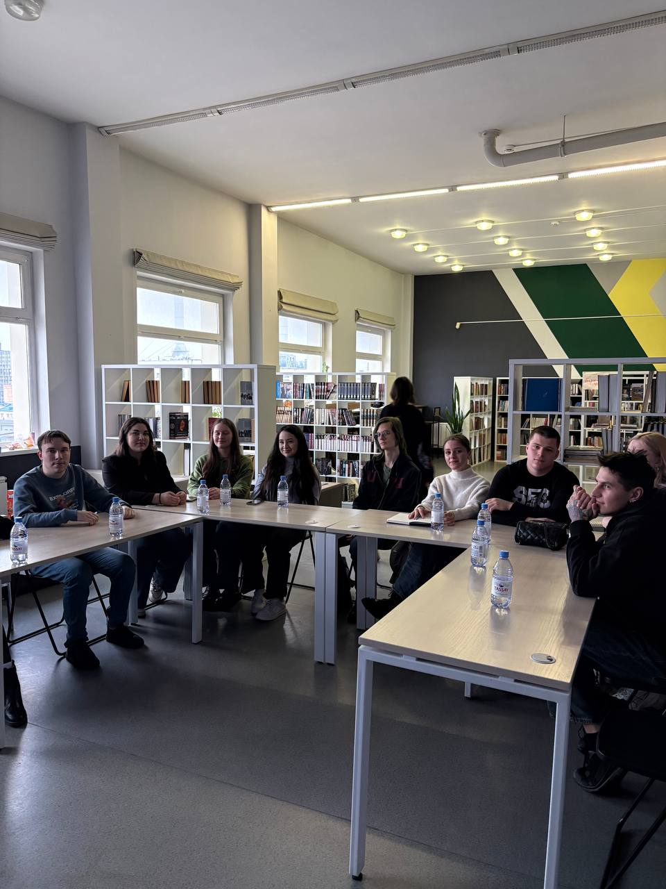
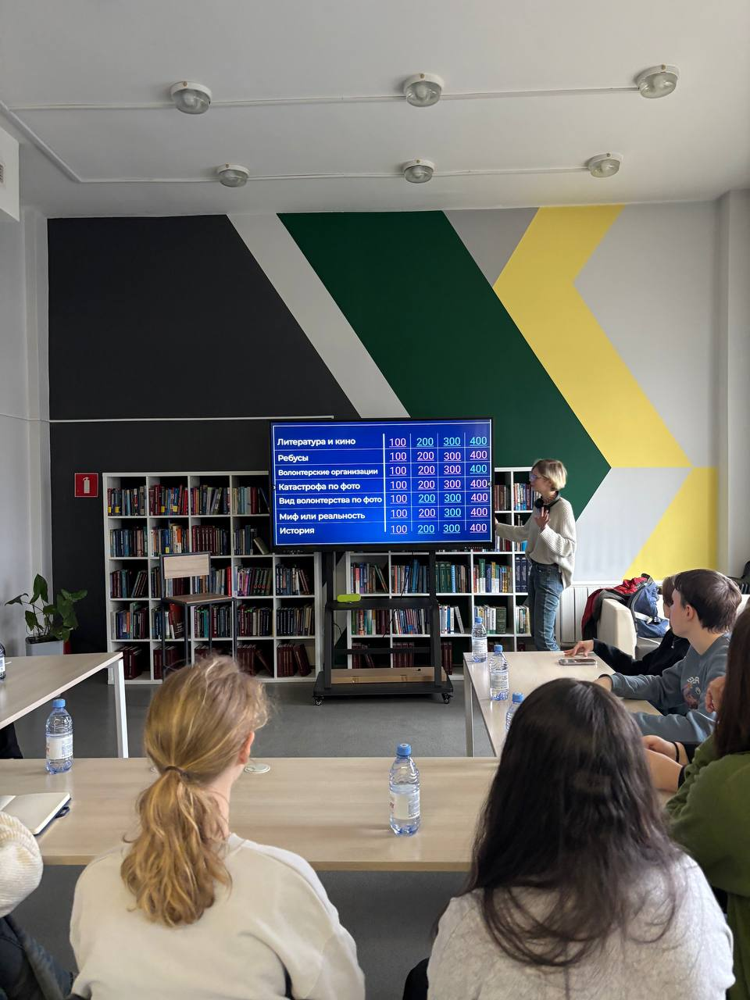
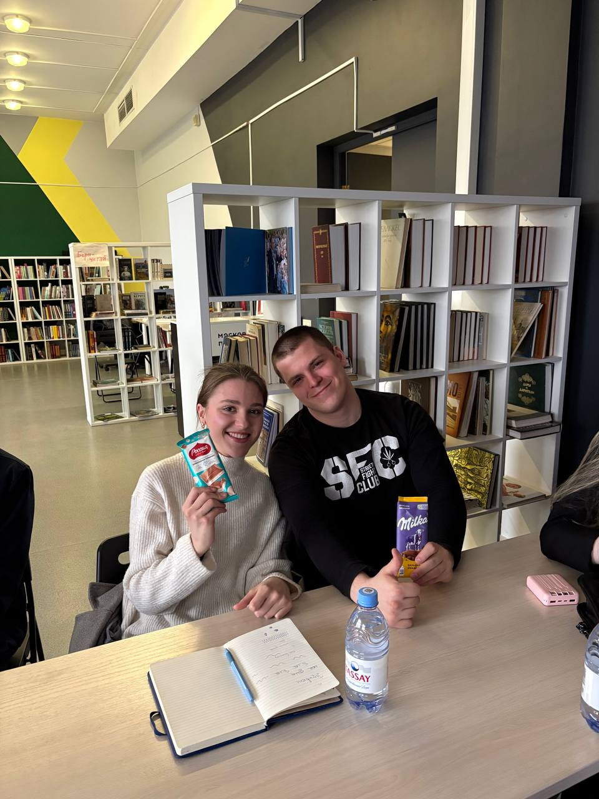
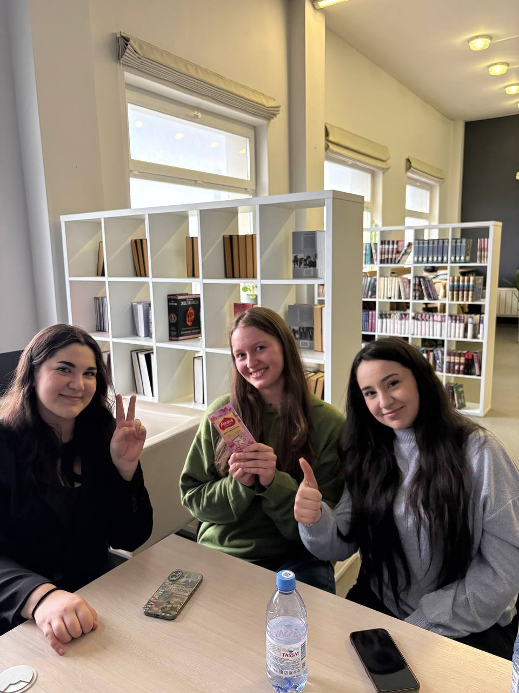

📝 Журнал проекта
Книжный фестиваль Фонарь
В Москве прошел благотворительный книжный фестиваль “Фонарь” – пространство, где любовь к чтению на один день приобрела вполне осязаемую форму: стопки книг, очереди у столов, тяжелые шоперы, споры о том, “надо ли нам это дома”, и лица людей, которые пришли “просто посмотреть”, а вышли с тремя пакетами. Благотворительный формат добавил происходящему правильную интонацию, дорогую книгу уже было не так жалко купить, как скажем, в обычном книжном магазине, так как все средства шли в фонд помощи людей с онкологией.
Прочитать о фестивалеВстреча с Александром Бережным
Студентка 3 курса журналистики и участница проекта задала вопрос о том, как в кино относятся к теме волонтёрства и возможно ли чаще видеть её на экранах
📹Ответ сценариста:
Мероприятие
Сегодня мы провели мероприятие — квиз на волонтёрскую тематику
В нём приняли участие ребята из Московского Политеха и просто гости
Решали ребусы, вспоминали литературу, кино, волонтёрские темы и разные интересные факты!
Общались и просто хорошо провели время
Победителей наградили сладкими призами
Мероприятие




🔔 Еженедельно добавляем отчёт о прогрессе.